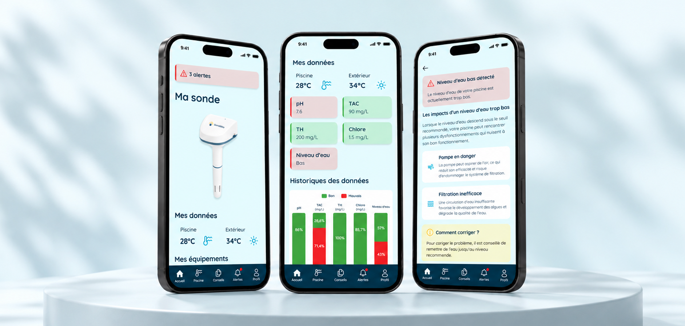

Product Design · UX/UI · Application mobile
Sondélia
Une application mobile pensée pour aider les propriétaires de piscine à suivre la qualité de leur eau et à gérer plus simplement l’entretien de leur bassin.
Découvrir le projet Voir tous mes projets